1. 서론
1.1 연구의 배경과 목적
국내 간편 송금 시장은 최근 몇 년간 급격한 성장을 보였다. [그림 1] 이는 디지털 금융 기술의 발전과 모바일 플랫폼의 보급으로 인해 가능해진 것인데, 이러한 간편 송금 시장에서 가장 큰 성장을 이룬 기업 중 하나는 ㈜비바리퍼블리카(이하 토스)이다. 토스는 2015년 2월 서비스 출시 초기부터 오직 모바일 앱 플랫폼을 기반으로 한 서비스를 제공하였고, 출시 1년 6개월 만인 2016년 8월, 누적 송금액 1조원을 달성한 후 2017년 12월 누적 송금액 10조원을 돌파하게 된다. [그림 2]
그림 1. 간편송금 서비스 이용금액(일평균) 그림 2. 토스의 간편송금 누적액
(출처: 한국은행) (출처: 토스)
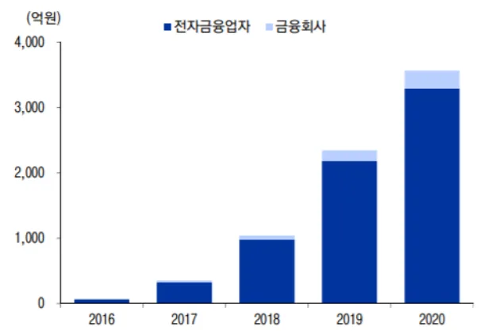
토스는 간편한 사용성과 빠른 송금 속도를 제공한 덕분에 빠른 속도 덕분에 많은 이용자들에게 인기를 얻을 수 있었다. 특히, 토스의 사용자 인터페이스는 직관적이고 쉽게 접근할 수 있으며, 당시로서는 혁신적으로 간단한 인증 과정을 거치면 송금이 가능한 점이 차별화된 점이었다. 연계된 은행 계좌에서 전화 번호를 이용한 SMS 발송만으로 송금이 가능하였고, ‘1원 인증’과 같은 송금의 사용자 경험을 바꾸는 혁신적인 기술을 도입하였다. [그림 3]
그림 3. 토스의 송금서비스 흐름도
(출처: 감사연구원)
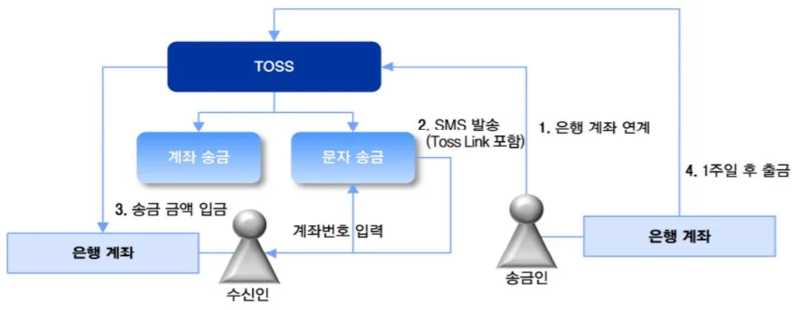
토스는 이러한 차별화된 사용자 경험을 바탕으로 사용자를 끌어 모아 2019년 10월, 월간 이용자수(MAU)가 1000만명을 돌파한 후 1000만명 이상을 꾸준히 유지하며 뱅킹앱에서 1위를 유지하고 있다. [그림 4]
그림 4. 뱅킹앱 월 활성사용자 수(MAU) (단위: 만명)
(출처: 모바일 인덱스 조사, 본인 작성)
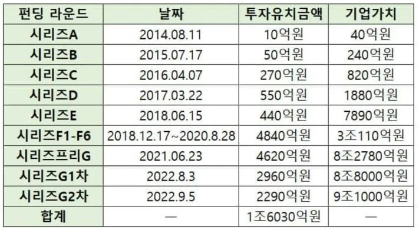
이렇듯 간편송금 서비스 시장을 주도하는 플랫폼으로서 입지를 다진 토스는 2020년 8월 토스페이먼츠 출범, 2021년 2월 토스증권 출범, 2021년 10월 토스뱅크 출범을 하며 공격적인 경영 행보를 이어 나갔고, 현재 투자유치금액 상 토스의 기업가치는 10조원에 육박한다. [그림 5]
그림 5. 토스의 투자유치 금액과 기업가치
(출처: 바이라인 네트워크)
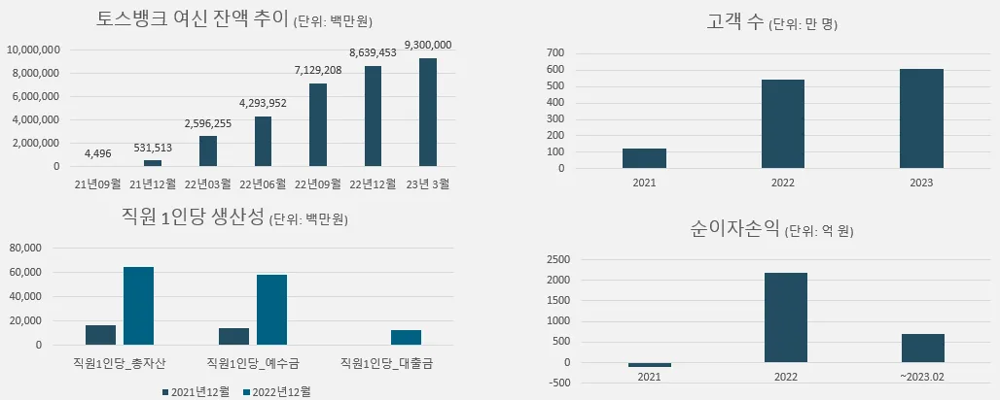
그러나 2022년 한 해 기준 토스의 영업손실은 2472억원에 달하고 있는 실정이다. [그림 6] 간편송금에 기반한 MAU를 확보한 상황이지만 실적을 획기적으로 전환하는 실마리를 얻지 못하고 있는 것으로 보인다.
그림 6. 토스 연도별 매출·영업이익 추이 (단위: 억원)
(출처: 비바리퍼블리카 사업보고서)
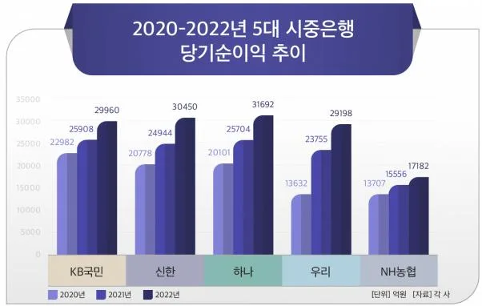
2021년 10월 출범한 토스뱅크가 마찬가지로 꾸준히 고객 수와 여신 잔액이 증가되는 등의 규모를 키우며 직원 1인당 생산성과 순이자손익의 대폭적인 성장을 이루고는 있지만, [그림 7] 최근 시중은행들이 몇 년 간의 금리 상승과 막대한 자본으로 수조원의 당기순이익을 기록하고 있는 것 [그림 8]을 감안한다면 은행업에서 토스뱅크가 토스 플랫폼을 통해 경쟁사 대비 우위를 가져오기는 힘든 것으로 보인다.
그림 7. 토스뱅크 주요 지표
(출처: 토스뱅크 사업보고서)
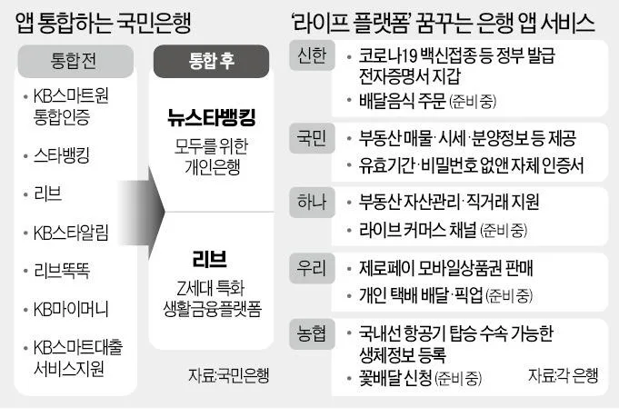
그림 8. 2020-2022년 5대 시중은행 당기순이익 추이
(출처: CEOSCORE DAILY, 23.02.15)
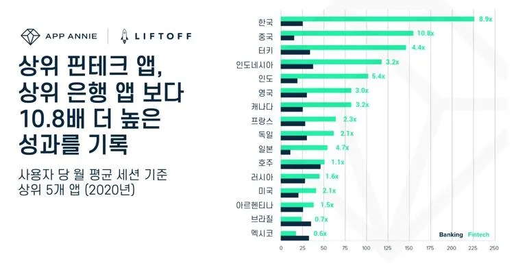
화를 이루었고, 앞선 실적에서 보듯이 간편송금을 통해 확보한 플랫폼을 통해 ‘직원 1인당 생산성’과 같은 효과를 가져올 수는 있게 되었다. 그러나 이러한 간편송금과 뱅킹 결합의 형태가 등장 초기에는 시중은행들의 뱅킹앱과 차별성을 가져와 사용자의 급격한 유입이 가능했지만, 최근에는 시중은행들도 막대한 자본에 힘입어 뱅킹앱들에 대한 IT 투자를 대폭 강화하였고, 그 결과 기존에 난립하다시피 한 관계사 앱들 간의 통합을 지속적으로 노력하게 되어 뱅킹앱 경쟁력을 대폭 개선하고 있는 상황이다. [그림 9] 결국 토스에 기반한 토스뱅크만의 차별성이 아직까지는 유효하나, 점차 그 차이는 좁혀지고 있는 상황이라고 볼 수 있다.
그림 9. 국민은행의 앱 통합과 시중은행 앱 서비스
(출처: 한경금융, 21.05.25)
그런데 최근 몇 년간 전세계적으로 금융의 중심 플랫폼이 뱅킹앱에서 핀테크앱으로 변화하는 양상을 보이고 있다. [그림 10]
그림 10. 2020년 사용자 당 월 평균 세션 기준 상위 5개 앱
(출처: 2021 모바일 금융 앱 보고서, 앱애니/리프트오프)
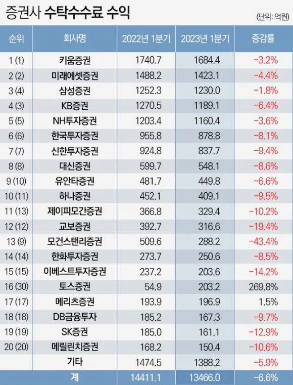
상위 핀테크앱이 상위 뱅킹앱보다 10.8배 더 높은 성과를 기록하는 것으로 조사되었는데, 이 때 뱅킹앱과 핀테크앱은 다음과 같은 차이를 보인다. [표 1]
표 1. 핀테크앱 vs. 뱅킹앱
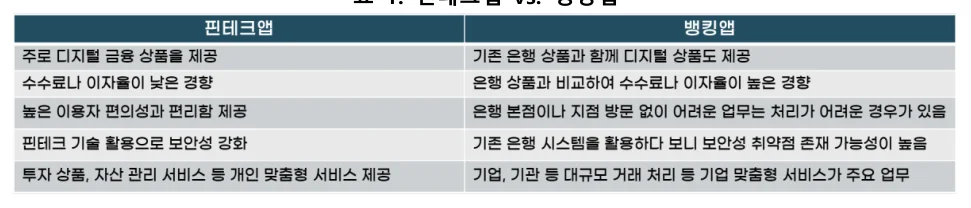
뱅킹앱이 아닌 핀테크앱이 금융의 중심이 되는 상황에서 토스가 장기간 간편송금앱을 거쳐 확보한 플랫폼으로서의 앱이 뱅킹앱과 비교해 확실한 차별성을 가지기 위해서는, 결국 핀테크앱으로서의 입지를 확실하게 가져야 한다는 결론이 나온다. 뱅킹앱과의 확실한 차이를 가지지 못했던 토스앱이 핀테크앱으로 단숨에 변모하여 시너지를 보여준 변화가, 바로 본 연구에서 다룰 토스증권의 출범이다.
토스앱 내 토스증권 서비스의 등장은 단숨에 토스앱을 핀테크앱으로 확실하게 변화시켰는데, 이와 유사한 핀테크앱으로서 토스와 거의 비슷한 시기에 출범한 곳으로 카카오페이증권이 있다. 그리고 출범 이후 약 2년 간 두 회사는 확실하게 다른 실적의 양상을 보여준다. [그림 11]
그림 11. 토스증권, 카카오페이증권 분기별 영업이익 추이 (단위: 억원)
(출처: 카카오페이, 비바리퍼블리카 사업보고서)
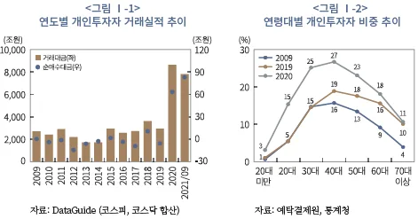
더 나아가, 비슷한 시기 다른 증권사들의 실적 [그림 12]을 비교해보면 토스증권이 시장의 흐름과 역행하는 탁월한 실적을 보여준 것을 확인할 수 있다.
그림 12. 22.1Q, 23.1Q 증권사 수탁수수료 수익
(출처: 금융투자협회 전자공시)
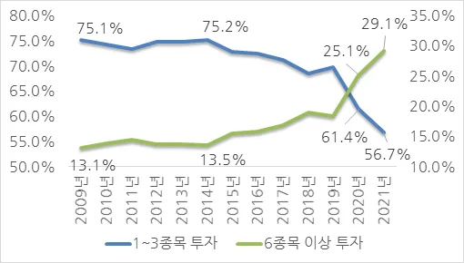
그렇다면 토스증권의 어떤 차별점이 여타 증권사, 심지어 가장 유사한 형태와 배경을 가진 카카오페이증권과 다른 행보를 보여주게 되는 것일까? 이는 전통적 강자인 대형 증권사들이 갖지 못한 것이어야 하며, 그리고 카카오톡, 카카오뱅크라는 유사한 플랫폼 성격의 앱을 가진 카카오페이증권이 갖지 못한 경쟁력이어야 한다. 본 연구는 이러한 경쟁력의 원천을 태생부터 모바일앱 단독으로 출발하여 오직 하나의 앱에서 동작하는 이른바 ‘슈퍼앱’이라는 토스의 최대 강점에서 찾고자 한다. 간편송금과 뱅킹 서비스에는 제한적인 도움이 되었던 ‘슈퍼앱’의 특징이 토스증권 출범이라는 핀테크앱으로의 진화 과정에서 비즈니스 혁신의 트리거가 된 것이다.
1.2 금융 슈퍼앱에 대한 정의
슈퍼앱을 간단하게 정의하면 ‘하나의 앱 안에서 별도의 다른 앱을 설치하지 않아도 수많은 서비스를 이용할 수 있는 앱’을 의미한다. 대표적인 국내 슈퍼앱으로는 네이버, 여행앱 야놀자, 라이프스타일앱 오늘의집, 푸드앱 배달의민족, 하이퍼 로컬앱 당근마켓 등을 들 수 있다. 보통 앞선 앱들처럼 성공적으로 슈퍼앱 플랫폼을 확보한 경우, 자사 플랫폼의 장점을 극대화할 수 있는 서비스를 지속적으로 추가하게 된다. 예를 들어, 당근마켓은 초기의 지역 중고물품 거래 서비스만 하던 앱을 지역 커뮤니티 슈퍼앱의 개념으로 확장시켜 지역 채용과 모임, 행사를 아우르는 동네 슈퍼앱으로 자리 잡았다. 이렇게 슈퍼앱으로 자리잡게 되면 이후에는 ‘지역 또는 동네’ 단위로 서비스되는 지역 가게 광고, 청소, 반려동물, 교육, 편의점, 부동산, 중고차 등 슈퍼앱의 성격과 유사한 서비스들에 쉽게 확장해 나가는 장점이 생긴다.
이런 엄청난 확장성을 확보하려고 많은 기업들은 슈퍼앱을 확보하기 위해 혈안이 되었고, 토스도 간편송금 서비스로 출발하여 ‘금융’ 슈퍼앱으로 자리잡고자 간편한 인증서, 신용점수부터 시작하여 각종 금융상품 연계, 결제, 공공요금 납부, 자영업 매출 서비스, 중고차 매매 등의 ‘금융’과 관련된 거의 모든 서비스를 제공할 수 있고자 노력하여 현재의 ‘금융 슈퍼앱’으로 자리잡게 되었다
금융 슈퍼앱은 하나의 앱에서 많은 서비스를 이용한다는 점 외에도 일반앱과 여러 다른 특징을 가진다. [표 2] 특히 앞서 설명한 다른 분야의 슈퍼앱들과 금융 슈퍼앱은 상황이 크게 다른 면이 있다. 일반적으로 슈퍼앱이 등장한 분야들은 새롭게 개척된 서비스이거나 여행, 푸드 등의 비교적 덜 복잡한 서비스들을 제공하여 슈퍼앱으로부터 신규 서비스가 파생되는 모습을 보이고 있다. 그러나 주로 대기업 금융 지주 산하 계열사들마다 별도의 서비스를 제공하는 금융 산업은, 비록 같은 그룹 소속일지라도 전통적으로 서로 간의 서비스 영역을 명확하게 구분해 왔다. 또한 그동안 수익 구조 자체가 모바일앱과 무관한 오프라인 영업과 B2B 거래에 대한 비중이 커서, 모바일앱 개발 자체의 중요성 인지도 매우 낮았기에 슈퍼앱은 고사하고 일반앱의 수준 마저도 매우 뒤처졌던 것이 사실이다. 따라서 금융 슈퍼앱이라는 개념 자체가 없었고, 처음에는 일반앱이었던 토스가 변모하면서 최초의 금융 슈퍼앱이 되었다고 볼 수 있다.
표 2. 슈퍼앱 vs. 일반앱
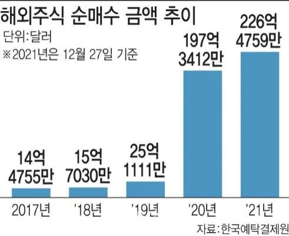
2. 연구 대상 소개
2.1 증권 산업 현황
토스는 핀테크 산업에 속하는 것으로 보는 것이 맞으나, 토스증권의 성공적인 흐름은 핀테크 산업보다는 증권 산업의 최근 흐름을 짚어 보는 것이 효과적일 것으로 보인다. 조금 더 정확히는 앞으로 토스증권이 물리적으로 위치한 토스라는 핀테크 슈퍼앱의 장점이 어떻게 증권 산업에 혁신을 가져왔는지 분석하기 위해, 먼저 증권 산업의 현황에 대해 알 필요가 있다.
구체적으로는 증권 산업 전반이 아닌, 토스앱을 등에 업은 토스증권이 목표로 하는 개인 증권투자 분야에 대해 살펴보도록 하겠다.
국내 주식투자 시장에서 개인투자자의 거래실적은 최근 몇 년 간 급증하였다.
위기가 저금리 기조, 부동산 가격의 상승, 급격한 노령화로 인한 노후 대비의 필요성 부각 등으로 인해 마냥 외면하면 되는 것이 아니라 잘 하기만 하면 시장 수익률을 이기는 개인의 유일한 수단이자 탈출구로 인식되게 된 것이다.
[그림 13] 과거 성숙하지 못한 금융 환경과 건전한 투자조차 투기로 여기던 분
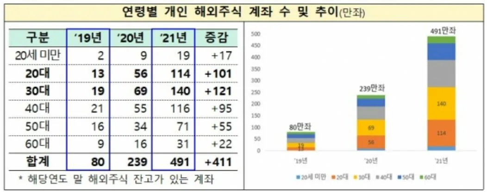
그림 13. 변화하는 개인투자자 흐름
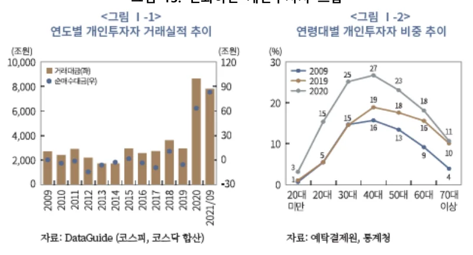
단순히 거래실적이 향상된 것뿐만 아니라, 그 동안의 한 두 종목의 ‘묻지마 투자’에서 탈피하여 개인투자자 스스로 투자에 대해 공부하고 포트폴리오를 구성하고 유망 종목을 발굴하여 다수의 종목을 보유하는 등의 투자의 질도 대폭 개선되었다. [그림 14]
그림 14. 2021년 12월 결산 상장법인 소유 종목 수 별 소유자 분포
(출처: 한국예탁결제원)
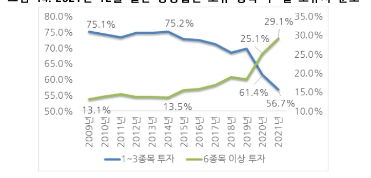
[그림 15]
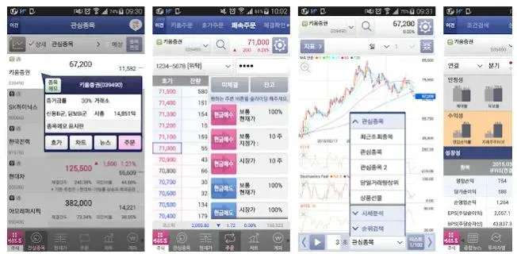
그림 15. 해외주식 순매수 금액 추이
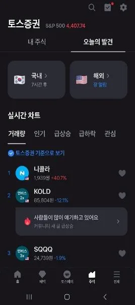
이러한 개인투자자의 관심 급증은 일반인들의 근본적인 투자에 대한 가치관이 변화하는 것이므로, 비단 국내 투자 시장에 국한되지 않고 조금 더 성숙하고 규모가 커서 기회의 문이 넓은 해외 주식 투자 시장에서 더욱 두드러지고 있다.
그리고 이러한 해외 주식 투자 시장의 성장은 20대, 30대가 이끌고 있다. [그림 16]
그림 16. 연령별 개인 해외주식 계좌 수 및 추이
(출처: 금융감독원)
결론적으로 최근의 개인투자자 거래액의 급격한 성장은 주로 해외주식 투자에서 두드러지게 나타나며, 이는 20-30대가 이끌고 있는 것이다. 이 연령대는 IT기술에 민감하며 편리성과 특히 커뮤니티 중심의 정보 공유에 매우 익숙한 세대이다. 따라서 개인 증권투자의 주도권을 잡기 위해서는 이 세대를 공략할 수 있는 IT 모바일앱이 필요한 것이다.
2.2 기업 소개
토스증권은 2018년 11월 27일에 설립되어 2021년 3월 15일에 영업 개시를 하였다. 개시 첫 해인 2021년보다 이듬해인 2022년에 영업 성과가 개선되면서 2023년 상반기에는 전년 대비 영업이익이 91% 증가하고 영업손실은 40억원으로, 이 추세대로라면 2024년에는 손익분기점 달성도 기대해 볼 수 있다. 또한 앞의 [그림 12]에서 확인할 수 있듯이 2023년 1분기에는 메리츠증권을 제외한 모든 증권사 수탁수수료가 감소할 때 유일하게 약 270% 증가하는 성과를 보여주었다.
그림 17. 최근 3년 간 토스증권 영업수익/영업이익 (단위: 억원)
토스증권은 2023년 5월에 모바일트레이딩시스템(MTS) 가입자가 500만명을 넘어섰는데, 작년 말 기준 국내 전체 주식 투자 인구가 1440만명임을 감안할 때 약 35%가 토스증권 MTS에 가입했다고 볼 수 있다. 출범 후 불과 26개월 만에 이룬 성과로, 산술적으로 보면 월평균 약 19만명, 매일 약 6300명이 토스증권 MTS를 처음 사용하기 시작한 것으로 이는 우리나라 자본시장 역사상 유례를 찾아보기 힘든 기록이다.
토스의 MTS 화면은 [그림 18] 홈트레이딩시스템(HTS)을 억지로 우겨 넣은 듯한 다른 증권사앱들과 [그림 19] 다르게 MTS에서 잘 사용하지 않는 기능과 불필요한 지표를 과감히 생략하는 등 철저히 모바일 중심으로 설계되었다.
그림 18. 토스증권 MTS
그림 19. 증권업계 1위 키움증권 MTS
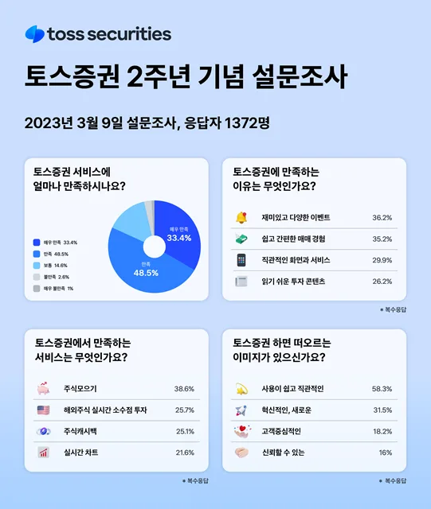
또한 토스증권이 처음 내놓은 ‘해외주식 리얼타임 소수점 거래 서비스’를 통해 1주당 가격이 높은 해외주식을 소수점 단위로 사고 시차 없는 실시간 거래까지 제공하여 2023년 4월 기준 토스증권의 해외주식 시장점유율은 21%로 업계 최상위 수준을 보이고 있다. 토스증권 자체 설문조사 [그림 20]에 따르면 고객들은 토스증권을 고객이 만족하는 이유에 대해 즐길 수 있는 재미있고 다양한 이벤트, 쉽고 간편한 매매경험, 직관적인 화면과 서비스, 읽기 쉬운 투자 콘텐츠로 응답하고 있다. 그리고 주식모으기, 주식캐시백과 같은 차별화된 서비스와 모바일 최적화된 MTS이기 때문에 구현 가능한 완벽한 실시간 차트도 만족하는 것으로 나타났다.
그림 20. 토스증권 2주년 기념 설문조사
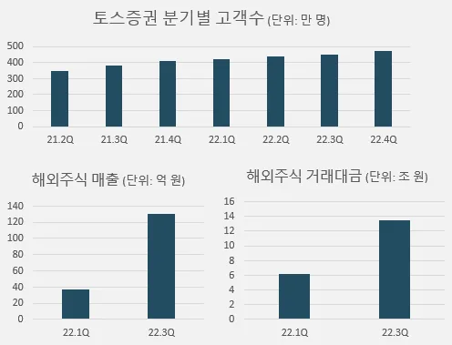
이렇게 차별화된 UX, UI를 제공하는 모바일 특화 MTS의 장점에 힘입어 토스증권의 고객수는 꾸준히 증가 중이며 해외주식 성장 또한 순항 중이다. [그림 21]
그림 21. 토스증권 고객 수 및 해외주식 규모의 성장
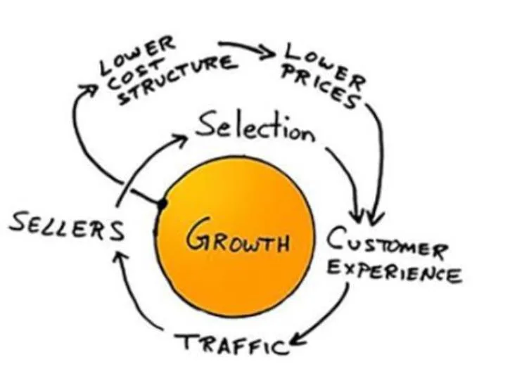
3. 이론적 배경
3.1 플랫폼 비즈니스 이론
플랫폼 비즈니스 이론은 기업이 디지털 플랫폼을 사용하여 가치를 창출하는 비즈니스 모델에 관한 이론이다. 플랫폼을 중심으로 한 생태계를 구축하고, 참여자 간의 상호작용과 가치교환을 촉진하여 새로운 비즈니스 기회를 창출하는 것을 강조한다.
플랫폼은 디지털 기술을 기반으로 한 온라인 공간 또는 인프라로, 사용자들이 서비스를 공유하고 상호작용할 수 있는 환경을 제공한다. 이는 다양한 형태로 존재할 수 있는데 웹사이트, 앱, 소셜 미디어 네트워크, 온라인 마켓플레이스 등이 그 예시이다.
플랫폼 비즈니스 이론은 기업이 플랫폼을 통해 다양한 이해관계자들을 연결하여 가치를 창출하는 것에 초점을 맞춘다. 이러한 이해관계자들은 공급자, 수요자, 제3자 서비스 제공업체, 개발자, 파트너사 등이 될 수 있으며, 기업은 이들을 플랫폼에 모으고 상호작용을 유도함으로써 네트워크 효과를 창출하고 경제적 가치를 창출한다.
또한 플랫폼 비즈니스 이론에서는 다양한 수익 모델이 적용될 수 있습니다. 일반적으로는 수수료 모델, 광고 모델, 구독 모델 등이 사용되며 데이터의 수집과 분석을 통해 개인화된 서비스를 제공하고, 사용자들의 경험을 개선하는 것도 플랫폼 비즈니스의 중요한 요소가 된다.
플랫폼 비즈니스 이론은 오늘날 디지털 시대에 적합한 비즈니스 모델로 인정받고 있으며, 여러 산업에서 성공적으로 적용되고 있습니다. 예를 들어, 에어비앤비는 숙박 서비스를 제공하는 플랫폼으로서 호스트와 게스트를 연결하고, 우버는 운송 서비스를 제공하는 플랫폼으로서 운전자와 승객을 연결하고 있다.
결국 플랫폼 비즈니스 이론은 기업들에게 비즈니스 모델 혁신과 성장의 기회를 제공하며, 참여자들에게는 다양한 서비스와 경제적 가치를 제공하는 새로운 경제 생태계를 형성한다.
플랫폼이 활발하게 동작하기 위해 가장 중요한 것은 ‘교차 네트워크’가 원활하게 동작하는 구조를 만드는 것이다. 교차네트워크란 쉽게 말해 한 사용자군의 행동이 다른 사용자군에 영향을 미치는 현상이라고 말할 수 있다. 이러한 교차네트워크가 발생해야 비로소 우리는 어떠한 서비스를 플랫폼이라고 말할 수 있게 된다.
이러한 교차네트워크가 발생하려면 기본적으로 양면시장, 교차보조도구, 가격전략의 3가지 요소가 필요하다. 양면시장은 한 마디로 플랫폼이 한 사용자군을 대상으로 하는 것이 아닌 양 측 사용자군을 연결하는 매개체이어야 하는 것을 의미한다. 그리고 교차보조도구는 사용자가 해당 플랫폼의 서비스를 사용해야만 하는 확실한 이유와 계기로 서비스를 사용하는 미끼라고 볼 수 있다. 마지막으로 가격전략은 ‘어떻게 누구에게 얼마의 가격을 지불하게 할 것인가’로 말할 수 있다.
결국 비즈니스 성공을 위한 플랫폼을 만들기 위해서는, 사용자가 해당 플랫폼을 이용하게 만드는 교차보조도구를 확보하고 이를 통해 유입된 두 분류 이상의 사용자들인 양면시장을 연결할 수 있어야 하며, 고객의 만족할만한 경험과 지속가능한 플랫폼에 필요한 비용과의 균형을 고려한 적절한 가격전략이 필요하다. 그리하여 ‘교차네트워크’가 활발하게 작동하게 되면 우리는 이 서비스를 플랫폼이라고 부를 수 있게 된다.
또한 플랫폼 비즈니스에서 모노호밍(Monohoming) 전략이란 사용자들을 한 가지 플랫폼에 독점적으로 유치하고 해당 플랫폼에서만 활동하도록 유도하는 것을 의미한다. 이 전략은 사용자의 로열티를 유지하고 경쟁 업체로부터의 이탈을 방지하기 위해 사용되는데, 모노호밍 전략은 일반적으로 다음과 같은 특징을 가지고 있다.
1) 독점적인 경험 제공: 해당 플랫폼은 사용자에게 독점적인 기능, 서비스 또는 콘텐츠를 제공함으로써 경쟁 업체보다 더 나은 경험을 제공한다. 이로써 사용자들은 다른 플랫폼으로의 이탈을 꺼리게 된다.
2) Lock-in 효과: 모노호밍 전략은 사용자들을 해당 플랫폼에 "Lock-in"시키는 효과를 가진다. 사용자들은 해당 플랫폼에서 쌓아온 데이터, 프로필, 연결성 등을 이탈 시 손실하게 되므로, 다른 플랫폼으로의 전환이 어려워진다.
3) 경제적 이점: 플랫폼은 해당 플랫폼에서 활동하는 사용자들을 대상으로 광고, 유료 서비스, 수수료 등의 방식으로 수익을 창출할 수 있다. 모노호밍 전략을 통해 플랫폼은 더 많은 사용자를 확보하고 이를 통해 경제적 이점을 얻을 수 있다.
플랫폼 기업이 모노호밍 전략을 취하기 위해서는 지속적인 혁신과 사용자 중심의 전략을 통해 경쟁력을 유지하고, 사용자들의 로열티를 유지해야만 한다.
3.2 네트워크 효과와 플라이휠 효과
네트워크 효과는 플랫폼 비즈니스에서 중요한 개념 중 하나이다. 이는 플랫폼에 참여하는 사용자 수가 증가함에 따라 전체 시스템의 가치가 증가한다는 원리를 말하며, 사용자 간의 상호작용과 연결성에 의해 발생하고 더 많은 사용자가 플랫폼에 참여할수록 전체 시스템의 가치가 증가하게 된다.
보통 네트워크 효과는 두 가지 주요 유형으로 나눌 수 있다. 첫 번째로 사용자 네트워크 효과는 플랫폼에 참여하는 사용자 수가 증가함에 따라 개별 사용자의 가치가 증가하는 것을 의미한다. 사용자가 많을수록 넓은 범위의 상호작용과 경제적 이익을 누릴 수 있다. 예를 들자면 소셜 미디어 플랫폼에서는 더 많은 사용자가 있는 경우, 개별 사용자는 더 많은 친구와 연결되고, 더 많은 콘텐츠를 공유하고, 더 많은 상호작용을 할 수 있다. 두 번째인 제조 네트워크 효과는 플랫폼에 참여하는 제조업체 또는 공급업체의 수가 증가함에 따라 사용자의 가치가 증가하는 것을 의미한다. 더 많은 제조업체가 플랫폼에 참여하면 다양한 제품이나 서비스가 제공되고, 경쟁이 활성화되어 사용자에게 더 많은 선택권과 경제적 이익을 제공할 수 있다. 예를 들자면 온라인 마켓플레이스에서 다양한 판매자가 있는 경우, 구매자는 다양한 제품을 비교하고 저렴한 가격으로 구매할 수 있게 된다.
네트워크 효과는 플랫폼 비즈니스의 성공과 지속성에 중요한 역할을 하므로, 플랫폼 기업은 초기에 사용자와 제조업체의 참여를 유치하고, 사용자 경험을 개선하며, 네트워크 효과를 촉진하기 위한 전략을 구상하는 것이 중요하게 된다.
플라이휠 효과는 기업이 성장하는 과정에서 초기에 작은 성과를 축적하고, 이를 반복하면서 점차 큰 성과를 이루는 효과를 말한다. 이러한 효과는 기업이 초기에 어려움을 겪을 때 더욱 중요한 역할을 하게 되며, 회전목마와 비슷한 모양으로 설명될 수 있다. 즉, 회전목마는 처음에는 천천히 움직이지만, 한 번 회전하기 시작하면 점점 빨라지면서 더욱 많은 힘을 얻어 빠르게 회전하는 것과 마찬가지로 기업도 처음에는 작은 성과를 축적하고, 이를 반복하면서 성장하면 더욱 많은 힘을 얻어 빠르게 성장하게 된다는 것이다. 우버의 사례를 예로 들어보면, 초기에는 소수의 차량과 드라이버만을 보유하고 있었지만, 이를 이용하는 사용자가 증가하면서 점차 많은 드라이버와 차량을 보유하게 되었고 이를 통해 우버는 더욱 많은 이용자를 유치하고, 더욱 많은 차량과 드라이버를 모집하면서 성장하게 되었다. 플라이휠 효과를 내기 위한 방법은, 초기에는 작은 성과를 축적하고, 이를 반복하여 점차 큰 성과를 이루어 나가며 동시에 시장 분석과 고객 이해, 차별화된 제품과 서비스, 효율적인 운영 등이 필요하게 된다.
그림 22. 아마존의 Virtuous Cycle
(출처: Amazon Jobs 홈페이지)
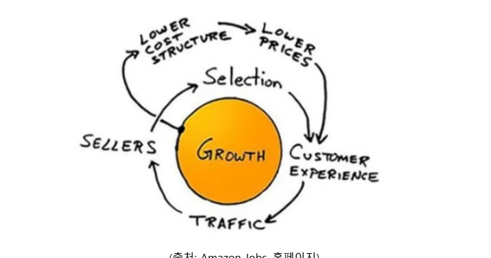
4. 금융 슈퍼앱 토스 기반 토스증권의 혁신 사례 연구
4.1 간편송금 및 토스뱅크 기반 해외 투자 프로세스 혁신
개인이 해외 주식 투자를 하는 프로세스 각각에서 일반적인 투자앱이 아닌 토스라는 슈퍼앱에 기반하는 토스증권만의 혁신을 설명할 수 있다.
1. 계정 개설 및 인증: 먼저, 개인은 모바일 앱을 다운로드하고 해당 앱에 계정을 생성해야 한다. 일반적으로 개인 정보, 신분증 사본 및 기타 필요한 문서를 제출하여 계정 인증 절차를 거치게 된다. 그러나 토스증권은 토스를 사용하는 사용자라면 별도의 인증 과정 없이 오로지 간편한 지문 인증만 하면 접근이 가능하게 된다.
2. 은행 계좌 연결: 해외 주식 투자를 위해서는 은행 계좌를 앱과 연결해야 한다. 개인은 자신의 은행 계좌 정보를 입력하고 연결 프로세스를 진행하게 되고, 이를 통해 개인은 자금을 앱 내의 투자 계정으로 이체하고 주식 거래에 활용할 수 있다. 일반 투자앱의 경우 은행 계좌를 연결하려면 별도의 뱅킹앱을 연결하여 확인하는 과정이 필수적인데 토스의 경우 토스뱅크가 토스증권과 같은 화면에 배치되어 있어 단 한 번의 이동만으로 극단적으로 편리하게 이용 가능하다.
3. 외환 환율 확인: 해외 주식 투자를 위해 외화를 필요로 할 경우, 앱은 실시간으로 외환 환율 정보를 제공해야 한다. 개인은 앱에서 현재의 외환 환율을 확인하고 이를 토대로 자금을 환전하거나 거래에 활용할 수 있다. 물론 일반 투자앱들도 환율 정보를 제공하지만, 중요한 점은 환전의 용이성이다. 토스는 2번에서와 마찬가지로 토스뱅크가 같은 화면에서 동작하고 있어서 환전이 필요한 경우 단 한 번의 인증으로 편리한 환전이 가능하다.
4. 주식 검색 및 분석: 앱을 통해 해외 주식 시장에서 거래 가능한 다양한 주식을 검색하고 분석할 수 있다. 앱은 실시간 주식 가격, 차트, 기업 뉴스, 재무 보고서 등 다양한 정보를 제공하여 개인이 투자 결정을 내리는 데 도움을 준다. 토스는 특유의 직관적이고 사용자 친화적인 UX를 자랑하는데, 토스증권은 별도의 노력을 들이지 않아도 토스앱 사용자 경험 혁신의 혜택을 고스란히 받아서 사용자에게 필요한 정보의 제공이 가능하다.
5. 매매 주문 생성: 개인은 선택한 주식에 대한 매매 주문을 앱에서 생성한다. 주문에는 매수 또는 매도, 거래 수량, 거래 유형 (시장가 주문 또는 지정가 주문), 거래 수수료 등을 설정한다. 이를 통해 개인은 주식 거래를 진행하고 투자 결정을 실행할 수 있다. 이 과정 또한 극단적으로 편리한 UX로 사용자로 하여금 매끄럽게 매매를 진행하게 하여 투자 활동 촉진을 가능하게 하고 이는 결국 해당 앱을 통한 거래의 증대로 이어진다.
6. 간편 송금: 해외 주식 거래를 위해 자금을 이동해야 할 경우, 토스와 같은 금융 슈퍼앱은 간편 송금 기능을 제공한다. 개인은 앱을 통해 외화 송금을 신속하고 안전하게 처리할 수 있다. 반대로 일반 투자앱은 아직도 계좌번호와 비밀번호를 입력하는 낡은 UX로 송금을 경험하게 하고 있는 실정이다.
7. 주식 거래 실행: 앱에서 생성한 주문이 완료되면, 개인의 주식 거래가 실행된다. 거래 실행 후 개인은 주식 거래 내역과 포트폴리오 업데이트를 앱에서 확인할 수 있다. 토스는 특히 주요 해외 주식 투자 연령대인 20대와 30대의 성공적인 주식 거래를 뽐내고자 하는 욕구와 다른 투자 고수들의 의견을 엿보고자 하는 욕구를 자극하도록 각 종목마다 주식 토론방을 마련해 놓았고 투자 고수들을 인지할 수 있는 뱃지 기능으로 직관적인 커뮤니티를 구축하는 데 성공하였다.
4.2 네트워크 효과
토스와 같은 모바일 특화 MTS뿐만 아니라 간편 송금, 인터넷 뱅킹이 모두 가능한 금융 슈퍼앱은 네트워크 효과 관점에서 아래와 같은 혁신을 가져온다.
1. 광범위한 서비스 생태계 구축: 금융 슈퍼앱은 다양한 금융 서비스를 한 곳에서 제공함으로써 사용자들에게 광범위한 서비스 생태계를 제공한다. 사용자들은 한 앱에서 간편 송금, 인터넷 뱅킹, 모바일 MTS 등 다양한 금융 서비스를 이용할 수 있어 편리함과 효율성을 느낄 수 있는데, 이를 통해 다른 앱이나 웹 사이트로의 이동 없이 필요한 금융 서비스를 한 자리에서 이용할 수 있는 장점을 가지고 있다.
2. 사용자 편의성과 접근 용이성: 금융 슈퍼앱은 다양한 금융 서비스를 하나의 플랫폼에 통합하여 제공하므로, 사용자들은 여러 앱을 설치하고 관리할 필요 없이 한 앱으로 모든 금융 서비스에 접근할 수 있다. 또한, 사용자 정보와 계정 정보를 한 번 등록하면 다양한 금융 서비스를 사용할 수 있는 편리함을 제공하고, 이는 사용자들이 금융 서비스에 쉽게 접근할 수 있도록 하며, 접근 용이성을 통해 이용량과 이용자의 만족도를 증가시킬 수 있는 장점을 가지고 있다.
3. 효율적인 자금 이동과 거래 처리: 금융 슈퍼앱은 간편 송금, 인터넷 뱅킹 등을 통합하여 제공하므로, 사용자들은 한 앱에서 신속하고 효율적으로 자금 이동과 거래를 처리할 수 있다. 예를 들어, 앱 내에서 간편한 송금 기능을 제공하면서도 은행 계좌 정보 등을 한 번 등록해두면 다양한 금융 서비스에서 자동으로 활용할 수 있는 장점을 가지고 있게 되므로 사용자들이 금융 거래를 편리하게 처리할 수 있고, 이용자 경험을 개선하며 효율성을 극대화할 수 있는 장점을 가지고 있다.
4. 데이터 통합과 개인화 서비스: 금융 슈퍼앱은 다양한 금융 서비스를 하나의 플랫폼에서 제공하므로, 사용자들의 데이터를 통합적으로 관리하고 분석할 수 있어서 사용자들에게 개인화된 금융 서비스를 제공할 수 있다. 예를 들어, 사용자의 투자 성향이나 소비 습관을 파악하여 맞춤형 투자 제안이나 금융 상품 추천을 할 수 있고 이를 통해 사용자들이 개인에 맞는 서비스를 받을 수 있고, 효율적인 금융 결정을 내리는 데 도움을 주는 장점을 가지고 있다.
4.3 슈퍼앱을 통한 플라이휠 효과
금융 슈퍼앱은 사용자들에게 편의성과 다양성을 제공하며, 이를 통해 사용자들의 만족도를 높이고, 사용자들의 수를 증가시킬 수 있다. 이는 플랫폼의 성장과 함께 기업의 가치와 영향력을 지속적으로 향상시키는 virtuous cycle을 형성할 수 있다. 이러한 플라이휠 효과의 장점은 아래와 같다.
1. 편리한 주식 거래 환경: 금융 슈퍼앱은 사용자들에게 편리하고 간편한 주식 거래 환경을 제공한다. 사용자들은 언제 어디서나 모바일 앱을 통해 주식 거래를 할 수 있으며, 신속하고 간편한 거래 과정을 경험할 수 있다. 이는 사용자들에게 편의성을 제공하고, 주식 거래의 접근성을 높여준다.
2. 다양한 주식 정보 제공: 금융 슈퍼앱은 실시간 주식 시세, 차트 분석, 기업 뉴스 등 다양한 주식 정보를 제공한다. 이는 사용자들이 신속하게 주식 시장 동향을 파악하고, 투자에 필요한 정보를 얻을 수 있도록 돕는다. 이러한 다양한 정보 제공은 사용자들의 지식과 투자 능력을 향상시키는 데 도움이 된다.
3. 개인화된 추천과 알림 서비스: 금융 슈퍼앱은 사용자들의 투자 취향과 관심사를 분석하여 개인화된 주식 추천과 알림 서비스를 제공한다. 이를 통해 사용자들은 자신에게 적합한 주식 정보와 투자 기회를 놓치지 않을 수 있다. 이러한 개인화된 서비스는 사용자들의 만족도를 높이고, 플랫폼에 대한 의존도를 증가시킨다.
4. 커뮤니티 및 소셜 기능: 금융 슈퍼앱은 사용자들 간의 상호작용을 촉진하기 위해 커뮤니티 및 소셜 기능을 제공한다. 이를 통해 사용자들은 주식 관련 정보를 공유하고, 다른 투자자들과 의견을 공유할 수 있다. 이러한 상호작용은 사용자들의 경험을 향상시키고, 플랫폼의 사용자 기반을 확대하는 데 도움이 된다.
5. 추가 서비스와 제휴 기업: 금융 슈퍼앱은 주식 거래 외에도 다양한 금융 서비스를 제공할 수 있는데 예금, 대출, 투자 상품 등의 다양한 금융 옵션을 제공하는 것이 바로 그것이다. 또한, 다양한 금융 기업과의 제휴를 통해 더 많은 서비스와 상품을 제공할 수 있는 플랫폼의 다양한 서비스와 제휴는 사용자들에게 더 많은 선택지를 제공하고, 플랫폼의 경쟁력을 향상시키게 된다.
5. 결론 및 시사점
본 연구에서 우리는 간편송금 서비스로 시작한 토스가 단기간에 많은 사용자들을 확보하고 플랫폼으로서 입지를 다졌지만, 이를 비즈니스적으로 강렬한 효과를 가져오는 것을 토스뱅크에서도 찾지 못하는 상황이었던 것을 먼저 살펴보았다. 그러나 그 이후 출범한 토스증권은 분명 슈퍼앱의 성격을 띄지만 금융 슈퍼앱으로서는 부족한 느낌이었던 토스를 단숨에 핀테크 슈퍼앱으로 변모시켰고, 최근의 증권 산업 흐름 속에서 이러한 슈퍼앱으로서의 성격이 극적인 성장과 이익을 가져오는 것을 알 수 있었다. 이는 최근 이렇다 할 성장의 트리거를 찾지 못한 증권 산업 혁신의 열쇠가 간편 송금, 뱅킹 등이 함께 존재하는 금융 슈퍼앱에 있었다는 해석을 할 수 있었고 이 혁신의 양상을 플랫폼 비즈니스의 성격과 플라이휠 효과의 관점에서 풀어보고자 하였다.
분명 차별화된 플랫폼을 구축하였는데 비즈니스적인 해답을 찾지 못했던 토스나, 구시대적인 사고 방식에서 탈피하지 못한 채 활로를 찾기 어려웠던 증권 산업의 사례를 보면서, 슈퍼앱 뿐만 아니라 다양한 플랫폼의 형태가 특정한 산업을 만나면 혁신의 트리거가 될 수 있을 것이라고 예상해 본다.
Reference
- 정진섭, 손성기, 토스(TOSS), 핀테크의 리더가 될 수 있을까?, 경영컨설팅연구, 2018.
- 김현우, 김승인, 핀테크 애플리케이션의 사용자 경험 연구 -토스와 카카오뱅크를 중심으로-, Journal of Digital Convergence, 2020.
- 정승재, 김승인, Z세대의 모바일 핀테크 서비스 사용자 경험 연구 -카카오페이와 토스를 중심으로-, Journal of Digital Convergence, 2020.
- 최철, 이철호, 국내 핀테크 업체의 혁신 사례 연구 – 토스를 중심으로, ITM 기술 경영사례연구, 2021.
- 김서연, 정영욱, Z세대의 MTS 사용자경험 분석: 토스증권 사례를 중심으로, 한국 디자인학회 학술발표대회 논문집, 2021.
- 김민서, 송영화, 임선영, 김유정, 핀테크 서비스의 고객경로에 관한 연구-토스와 카카오를 중심으로, 경영과 정보연구, 2021.
- 조정민, 이상원, 모바일거래시스템의 사용자 중심 디자인 가이드라인 제안: 토스 증권을 중심으로, 한국 HCI 학회 학술대회, 2022.
- 임동혁, 심의섭, 금융(Finance)과 기술(Technology)의 융합이 이끌어가는 은행산 업 변화에 관한 연구: 토스뱅크 인가 전후 은행산업 변화 중심으로, 한국공공정책학 회, 2022.
- 장진원, [뉴노멀 이끌 혁신 금융] 베스트 디지털뱅크, 포브스 코리아, 2022.